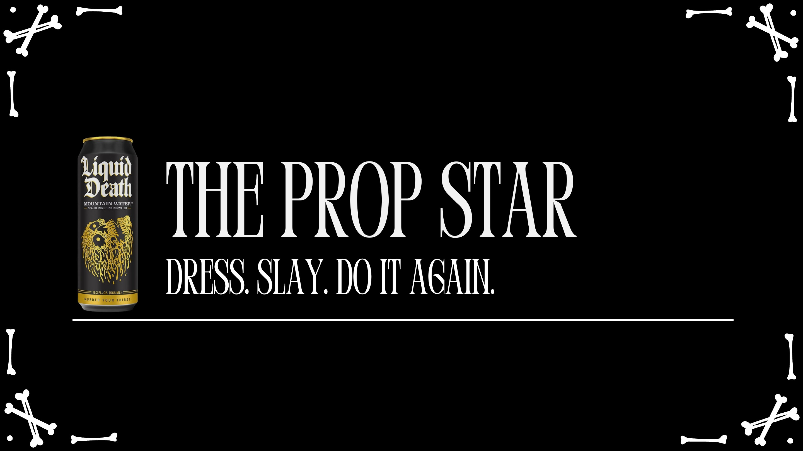
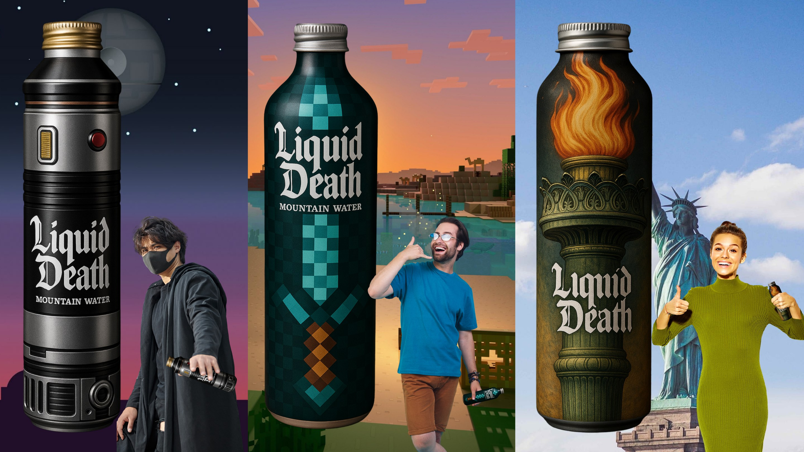
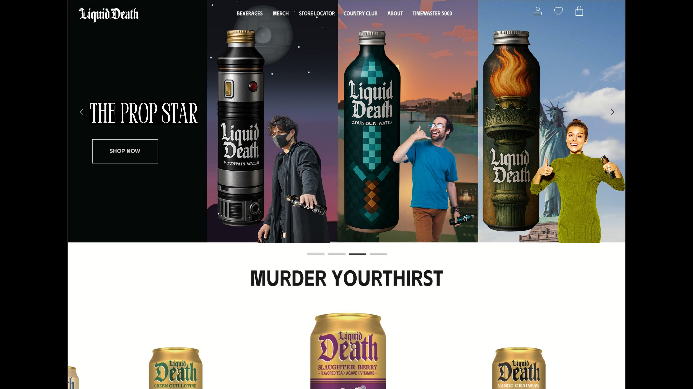

Liquid Death
Turning every bottle into an instant Halloween costume prop.

More parties than costumes.
Halloween invitations multiply faster than people can plan looks. The gap is not enthusiasm—it is the time, effort and expense of becoming someone new for every room.

Liquid Death already behaves like a prop.
The tall can, aggressive voice and irreverent visual language make the product feel closer to an accessory than ordinary water. That behavior became the starting point.
The Prop Star.
Limited-edition bottle designs transform hydration into recognizable character props. An everyday outfit plus one can becomes a complete, camera-ready Halloween identity.

Dress. Slay. Do it again.
A digital selector pairs bottles with instant characters, letting partygoers switch identities across the night without planning, panic or a second costume.
From thought
to touchpoint.
- Big idea
- Limited-edition packaging
- Character system
- Interactive web concept
- Campaign copy
“The most ownable extension did not decorate the bottle. It made the bottle perform a new social role.”